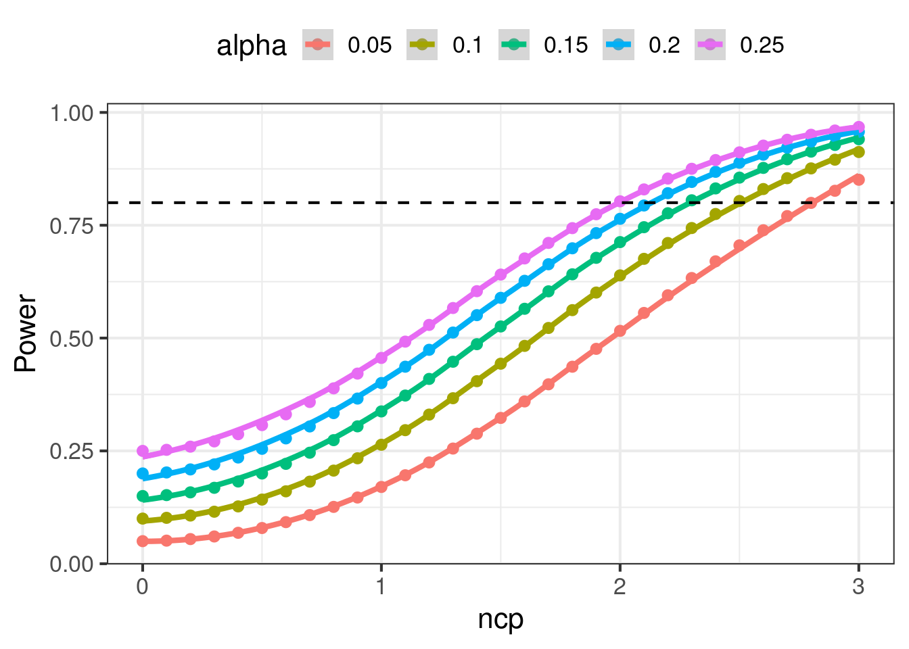
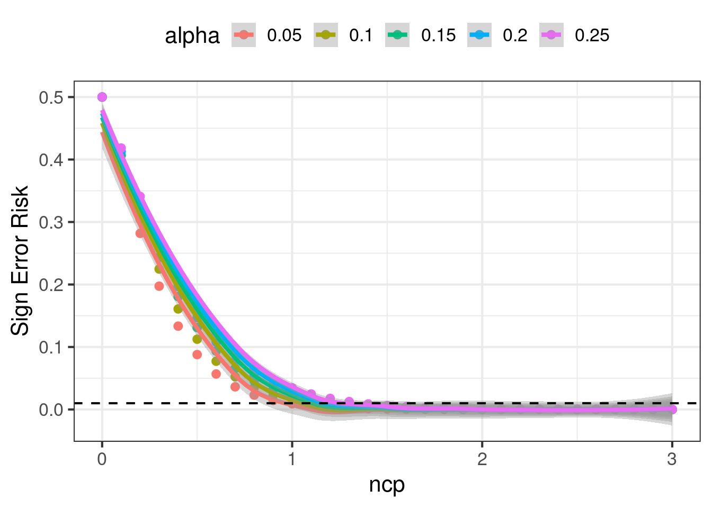
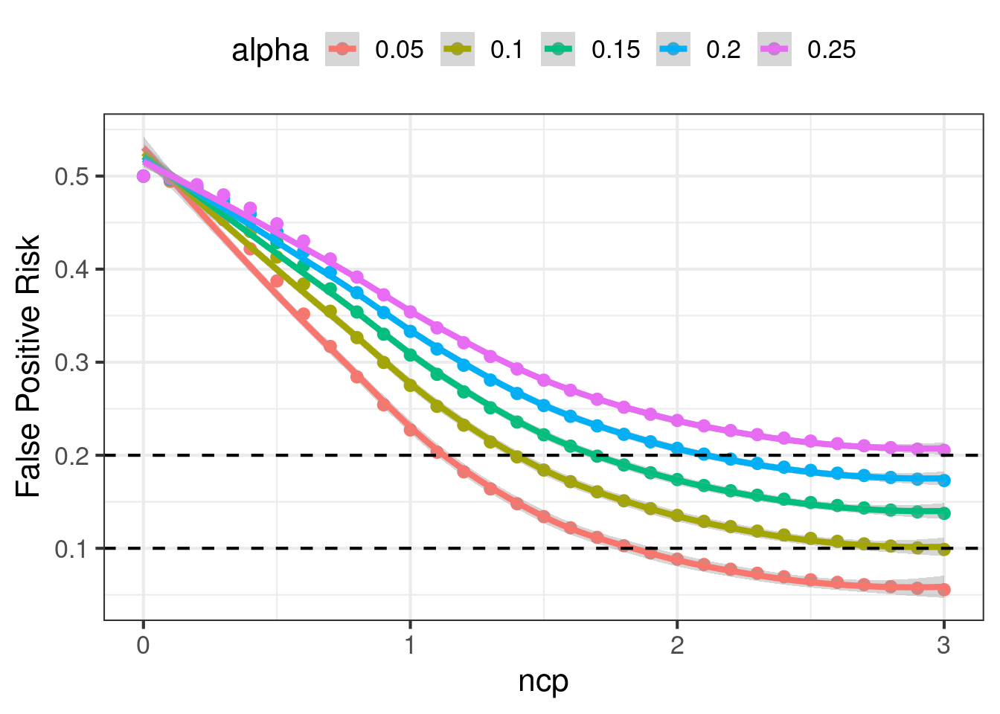
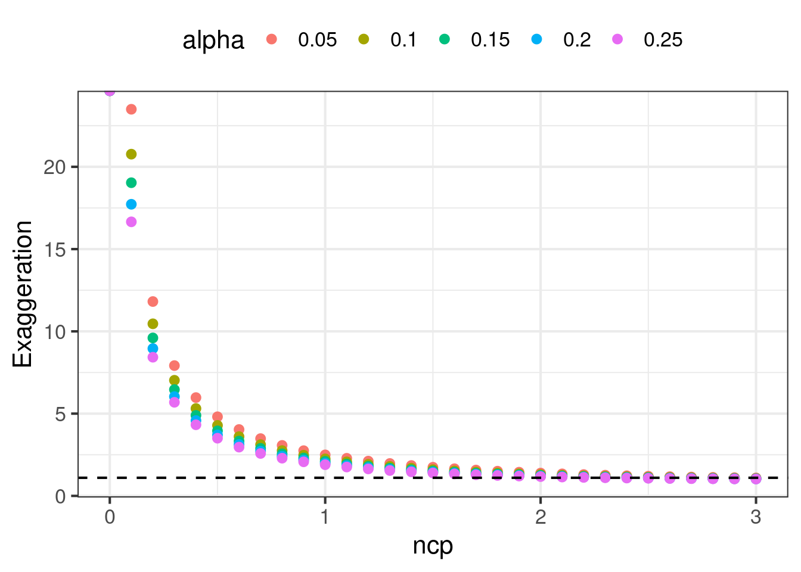

retrodesign = function(ncp, alpha = .05) {
crit = qnorm(1-alpha/2)
power = pnorm(-crit - ncp) + pnorm(-crit + ncp)
sign_risk = pnorm(-crit - ncp) / power
exaggeration_numerator = dnorm(crit - ncp)
exaggeration_denominator = ncp * (1 - pnorm(crit - ncp))
data.frame(
ncp = ncp, alpha = alpha,
power = power, sign_risk = sign_risk, exaggeration = 1 + exaggeration_numerator / exaggeration_denominator
)
}An experiment can make many errors. What error do we care about? How do we design an experiment that can make guarantees that those errors are small? While a randomized and controlled experiment lets us report an unbiased estimate of the treatment effect, the reported effect may still
- Have the wrong sign.
- Have an exagerated effect size.
- Be a false positive.
We’ll describe each case from first principles, and how to design an experiment when one of the errors is especially important.
Sign Error
Andrew Gelman says that we should not only plan an experiment for power, we should also plan to control for a type S error as well as an exaggeration factor. A type S error is when we flag stat sig, but the estimated effect has the wrong sign. The probability of a type S error conditions on stat sig, where the denominator is power and the numerator has
\[\begin{align} Power &= \Phi(\delta - z_{1-\alpha/2}) + \Phi(-\delta - z_{1-\alpha/2}) \\ P(\text{Sign Error} | Sig) &= \frac{\Phi(-\delta - z_{1-\alpha/2})}{\Phi(\delta - z_{1-\alpha/2}) + \Phi(-\delta - z_{1-\alpha/2})} \end{align}\]
Power is a function of the ncp, and \(\alpha\). The probability of a sign error is a function of the same variables. So they can be computed at the same time. Below we will show that the exaggeration ratio can also be computed at the same time.
Exaggeration (Type M Error)
When we publish only stat sig results, we run into a winner’s curse problem. The results will tend to be exaggerated. The mere fact that a collection of results are all stat sig is correlated with the results all having large effect sizes. Remember that the underlying effect has randomness around it, and can appear in data as a large effect or a small effect. Conditioning our reporting on stat sig results means we are masking the small effect, creating the incorrect perception that the underlying effect is large. The exaggeration factor tries to measure the difference between the reported effect and the underlying effect.
Say that we measure a treatment effect \(\hat{\Delta}\) with standard error \(se(\hat{\Delta})\). Without loss of generality, say \(\Delta > 0\), and since we condition on stat sig we also have \(Z \geq z_{1 - \alpha/2}\). The estimated effect size can be expressed in terms of standard errors \(\hat{\Delta} = Z se(\hat{\Delta})\). The exaggeration is
\[\begin{align} M &= E[\frac{\hat{\Delta}}{\Delta} | Z \geq z_{1 - \alpha/2}]\\ &= \frac{se(\hat{\Delta})}{\Delta} E[Z | Z \geq z_{1 - \alpha/2}] \end{align}\]
We know that \(Z \sim N(ncp, 1)\) itself is a normally distributed variable, and the portion of this distribution with \(Z \geq z_{1 - \alpha/2}\) is a truncated normal. The expectation of this truncated normal is \(ncp + \frac{\phi(z_{1-\alpha/2} - ncp)}{1 - \Phi(z_{1-\alpha/2} - ncp)}\). So the final expression for the exaggeration is
\[ \boxed{M = 1 + \frac{\phi(z_{1-\alpha/2} - ncp)}{ncp(1 - \Phi(z_{1-\alpha/2} - ncp)}} \]
An interesting thing to note is that the exaggeration decreases when \(\alpha\) increases. When we open up \(\alpha\) and allow more results to be flagged as stat sig, then the winner’s curse problem naturally dissipates, reducing the exaggeration.
Type M is also a function of only the ncp and \(\alpha\), so can be computed at the same time as power and type S.
False Positive Risk
We can use the formula for false positive risk (FPR) to estimate a probability that a stat sig result is actually a false positive. For a test with \(\alpha = 0.05\), 80% power, and a 80% chance that the null hypothesis is true, the FPR is 20% This is an important risk to understand, and it is frequently confused with \(\alpha\). Many people think that \(\alpha\) controls the false positive rate among significant results, but actually what it controls is a false positive rate under the null hypothesis. The FPR is actually what most people think of when they think of the false positive risk.
\[\begin{align} \text{P(H0 is true | stat sig)} &= \text{P(stat sig | H0 is true)} \cdot \frac{\text{P(H0 is true)}}{\text{P(stat sig)}} \\ &= \frac{\alpha \text{P(H0 is true)}}{\alpha \text{P(H0 is true)} + (1 - \beta) (1 - \text{P(H0 is true)})} \end{align}\]
Unlike type S or type M functions, FPR is normally written in terms of \(\alpha\) and power. However, power is a function of \(\alpha\) and ncp. So we can cast FPR to look like it has similar arguments to type S and type M functions. This casting is going to be very convenient later.
# Traditional implementation of fpr
fpr_traditional = function(prior_h0_true, alpha = 0.05, power = 0.8) {
numerator = alpha * prior_h0_true
denominator = alpha * prior_h0_true + power * (1 - prior_h0_true)
numerator/denominator
}
# More convenient implementation of fpr
fpr_alternative = function(ncp, prior_h0_true, alpha = 0.05) {
crit = qnorm(1-alpha/2)
power = pnorm(-crit - ncp) + pnorm(-crit + ncp)
numerator = alpha * prior_h0_true
denominator = alpha * prior_h0_true + power * (1 - prior_h0_true)
numerator/denominator
}
data.frame(
prior_h0_true = seq(from = 0, to = 1, by = 0.01)
) %>%
mutate(
fpr = fpr_traditional(prior_h0_true)
) %>%
ggplot(
aes(x = prior_h0_true, y = fpr)
) +
geom_point() +
theme_bw(base_size = 16) +
xlab("Prior that H0 is True") +
ylab("False Positive Risk")Contrast in Experimental Design
So far we have described many different types of errors that can occur while designing an experiment. We tend to take for granted why conventional wisdom says to plan a test to achieve 80% power while holding \(\alpha = 0.05\). We will explore why those values were chosen and what properties do they yield.
Practitioners tend to say we need to design a high powered test. If we wanted to simply achieve high power, we could easily achieve that by setting \(\alpha = 1\). Then every result, regardless of effect size, is flagged as stat sig with power = 100%. However, there would be many false positives, and there would be no clear understanding of which results to report. So power, false positives, sign errors, and exaggeration all need to be balanced. Is pinning \(\alpha = 0.05\) and power = 80% the right balance? We will explore that.
To make the study simple, we note that power, FPR, sign errors, and exaggeration can all be computed by using the planned ncp, \(\alpha\), and the prior that the null is true. We will scan 3 inputs and study how the 4 design statistics vary.
exp_design_statistics = function(ncp = 2.8, alpha = 0.05, prior_h0_true = 0.5) {
cbind(
retrodesign(ncp = ncp, alpha = alpha),
fpr = fpr_alternative(ncp = ncp, prior_h0_true = prior_h0_true, alpha = alpha)
) %>%
mutate(
required_n_c = ncp^2 * 1 * (1 + 1/1) / (.1^2)
)
}Traditional Designs
Say that we want to be able to detect a effect of 0.1. The standard deviation of the outcome is 1. We pin \(\alpha = 0.05\) and \(\beta = 0.2\). Data is randomly split 50/50 between treatment and control.
The amount of data needed was described in Foundations of Statistical Power
\[n_C = n_T = 2 \frac{(z_{1-\alpha/2} - z_{\beta})^2 \sigma^2}{MDE^2}\]
which produces a \(n_C + n_T \approx 32 \frac{1}{(.1)^2} = 3200\) To confirm this design has 80% power, we can verify in code
n_c = 1600
k = 1
delta = 0.1
alpha = 0.05
sigma2 = 1
pooled_se = sqrt(sigma2 / n_c * (1 + 1/k))
pooled_ncp = delta / pooled_se
crit = qnorm(1-alpha/2)
power = pnorm(-crit - pooled_ncp) + (pnorm(-crit + pooled_ncp))
print(power)[1] 0.8074304We can learn much more about this particular design other than that it achieves 80% power. It also has a \(\approx 0\)% sign error rate, an exaggeration of \(1.125\) and false positive risk of 6% when the prior for the null is 50/50. This is a good design.
exp_design_statistics(ncp = 2.8, alpha = 0.05, prior_h0_true = 0.5) ncp alpha power sign_risk exaggeration fpr required_n_c
1 2.8 0.05 0.7995569 1.210843e-06 1.125219 0.05885421 1568However there are other configurations that can also yield 80% power. If we allow \(\alpha\) to vary, then any configuration that yields an ncp of \((z_{1 - \alpha/2} - z_\beta)\) will also achieve 80%. We want to explore other configurations and see how type S errors, exaggeration, and fpr change.
Alternative Design
In this section we explore alternative configurations to experimental design. We will let \(\alpha\) and the ncp vary, and compute the changes to power, FPR, type S error rates, and exaggeration. We will do this with a 50/50 prior that the null is true. The results are charted below.
`geom_smooth()` using method = 'loess' and formula = 'y ~ x'
`geom_smooth()` using method = 'loess' and formula = 'y ~ x'
`geom_smooth()` using method = 'loess' and formula = 'y ~ x'

There are patterns in the charts that are noteworthy:
- Power increases as ncp increases. Power also increases as \(\alpha\) increases. Power is very sensitive to ncp in the range \(ncp \in [0.5, 2.5]\), small improvements to the ncp can change power by a lot. In order to achieve 80% statistical power, we must plan for \(ncp \geq 1.5\) or higher depending on \(\alpha\).\
- Once \(ncp \geq 1.5\), sign error rates are fairly small, regardless of \(\alpha\).
- FPR decreases as ncp increases. FPR also increases when \(\alpha\) increases, holding ncp constant. When \(\alpha\) is small, the FPR is sensitive to small changes in the ncp, but FPR can be flat when \(\alpha\) is large. To have \(FPR \leq 0.2\), we need \(ncp \geq 1.1\) or higher depending on \(\alpha\). Similarly to have \(FPR \leq 0.1\) we need \(ncp \geq 1.9\) or higher.
- Exaggeration decreases as ncp increases. It also decreases when \(\alpha\) increases. Achieving \(M \leq 1.1\) can be very hard, requiring ncp to be between 2.0 and 2.8. At high values of ncp, exaggeration is not sensitive to \(\alpha\).
All of these charts are nonlinear curves. There are diminishing returns to increasing the ncp. Yet, a doubling of the ncp requires a 4x in the data volume, since \(ncp = \frac{\Delta}{se(\hat{\Delta})}\). Below is a table of configurations that range from “good” to “reasonably acceptable” to “bad”, and how data volume vaaries the quality.
The standard practice of \(\alpha = 0.05\), and power = 80%, is a good practice. Many others actually even advocate for more data. However, it is important to understand how we arrived here, and whether there is flexibility when designing your own experiment. Understanding the first principles is crucial.
| Experimentation Design Statistics | ||||||
Design Inputs
|
Design Statistics
|
|||||
|---|---|---|---|---|---|---|
| ncp | alpha | required_n_c | power | sign_risk | exaggeration | fpr |
| 3.4 | 0.01 | 2312 | 0.80 | 0.00 | 1.11 | 0.01 |
| 2.8 | 0.05 | 1568 | 0.80 | 0.00 | 1.13 | 0.06 |
| 1.5 | 0.05 | 450 | 0.32 | 0.00 | 1.74 | 0.13 |
| 1.5 | 0.10 | 450 | 0.44 | 0.00 | 1.59 | 0.18 |
| 1.5 | 0.20 | 450 | 0.59 | 0.00 | 1.44 | 0.25 |
| 1.5 | 0.50 | 450 | 0.81 | 0.02 | 1.24 | 0.38 |
| 2.0 | 0.05 | 800 | 0.52 | 0.00 | 1.39 | 0.09 |
| 2.0 | 0.10 | 800 | 0.64 | 0.00 | 1.29 | 0.14 |
| 2.0 | 0.20 | 800 | 0.76 | 0.00 | 1.20 | 0.21 |
| 2.0 | 0.50 | 800 | 0.91 | 0.00 | 1.09 | 0.35 |